this is also the convention that I officially provisioned the CosMarias -- which consisted of myself, Musashi, and Albedo!! more on that as you read the article.
this is the second-overall local convention that I attended that is closer to home!! but I didn't expect that there's something more than just a simple presence to the event -- to make it even more extra special, I've added some daring stunts to the mix. let's have a look:
anyone might not have heard of this event, and even I too initially; but after getting wind of it via Facebook (to which I primarily use that for everything #AgaCosplay), I've been hyping it non-stop -- hoping to get the word out about this venture even with this limited reach that I currently have.
in contrast to Bataan Anime Convention 2024 tho, I've done more than just showing up, looking at booths, and mingling with fellow cosers!! as part of this hype, I've done more than just that -- let's have a look at the following:
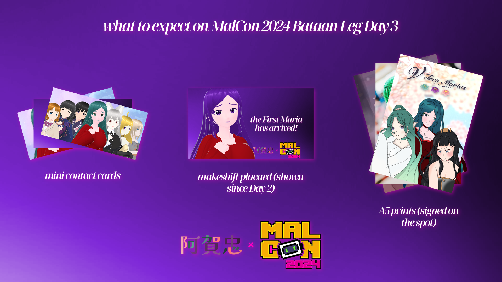 — all the materials expected during MalCon 2024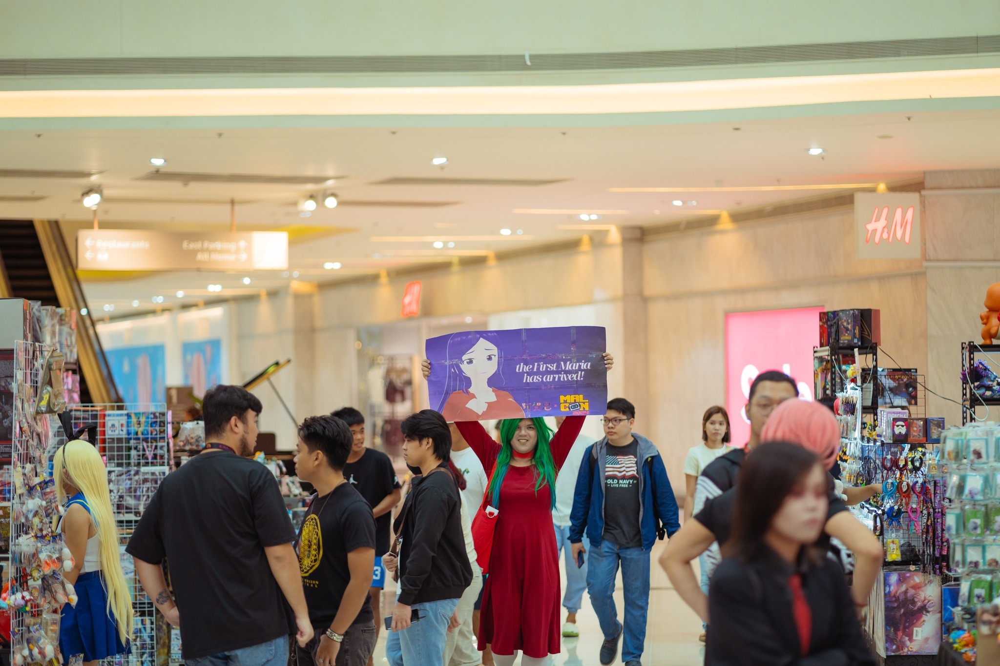 — cred. Berlyndg for MalCon 2024
first off, I actually went ahead and printed the tarpapel (tarpaulin but made of paper) to be used for the convention, which is the first that I did in a long time. to be honest, I haven't had the thought process to do that during the previous con cuz I've been hasting much..
but, now with some preparations out of the way (and ahead of schedule, albeit they almost tie in with my call time); the next thing to do is to let the placard do the work -- which actually attracted attention.. so I can't go back now lmao😅
for those who were curious, below is the graphic that became a placard:
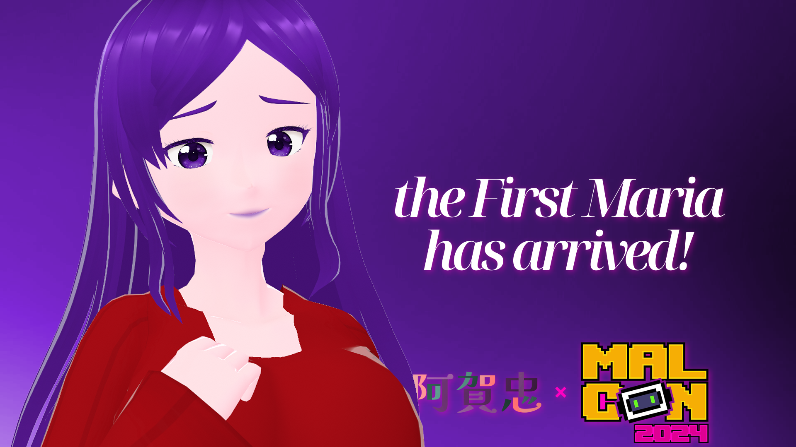 — "the First Maria has arrived!"
that somehow became the most significant out of the three as it not only allow me to wave the flag of what Collective I represent in my own way, this actually attracted some attention -- which actually helped me get the word out!!
speaking of attention, the staff I stumbled across with were very accommodating and pretty chill for the most part -- kinda more than fulfilling to say the least!!
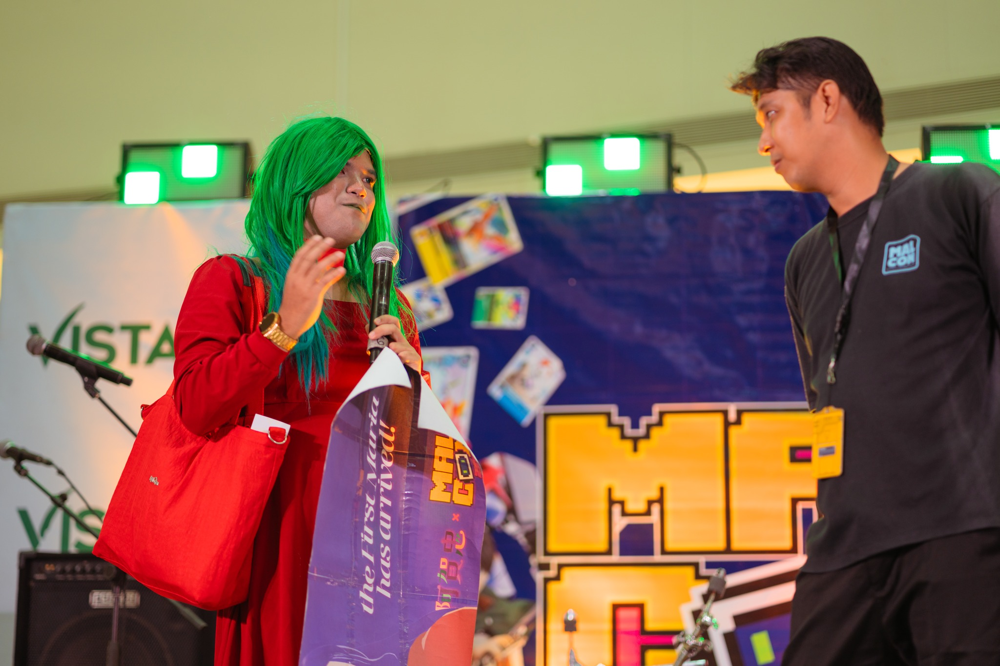 — cred. Berlyndg for MalCon 2024
a lil note on this one: I debuted the placard during Day 2 of the event, and it continued until Day 3.
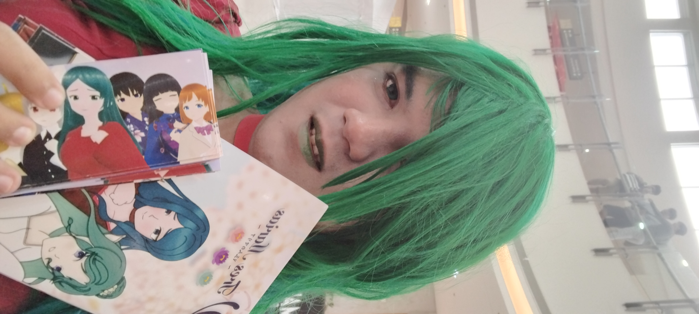 — all the contact cards and A5 prints!! (Day 3)
this one took some effort as I've been working on the cards and their revisions since post-BACon 2024. in fact, I actually had this idea of having myself some cards to distribute after receiving some from the booths during that event!!
in essence, these designs took a hell lot so I decided I'll put something simple for the time being. I didn't know that actually went well with what I anticipated since I wanted it to remain simple -- much like what I currently have in regards to streaming assets and my current model.
I've given out just one type of cards during Day 2, but I actually went ahead with more designs for Day 3. here are the following:
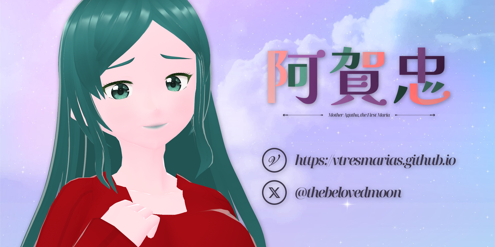 — general simplistic contact card
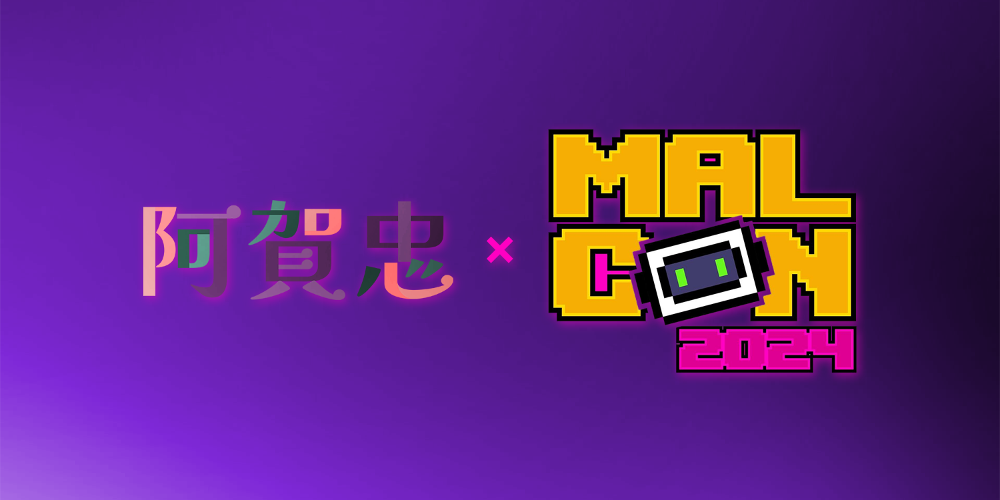 — 阿賀忠 × MalCon2024
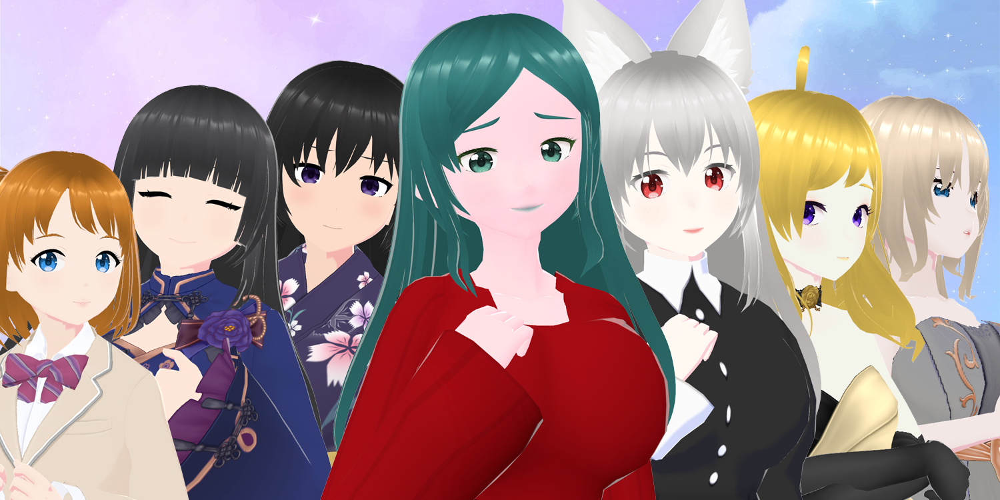 — all the vroids currently active atm (LTR: Kosaka Honoka, Shirokane Rinko, Sumiyoi Sakura, Aga-chuu, Senri Mana, Emii Shion, Arthur Regina Leidram)
admittedly, I had to print them in photo paper since I don't have a vellum on-hand at the time of the event, but it sure packs the punch!! most cards given to me during BACon 2024 were vellum and similar types (some of em are very fancy), so I had to improvise for the sake of giving these out.
 — "Improvise. Adapt. Overcome."
— "Improvise. Adapt. Overcome."
as of writing this blog, I still have some extra cards in the inventory; but I plan to make more variants as per demand (specifically ShiraCoser, we'll get to that topic later) for the next con. who knows, maybe more than just a one-sided print??
as a specialty for Day 3, I've prepped an extra-special merch for the congoers: an A5 print of a selection of my favorite stuff!! they include the following:
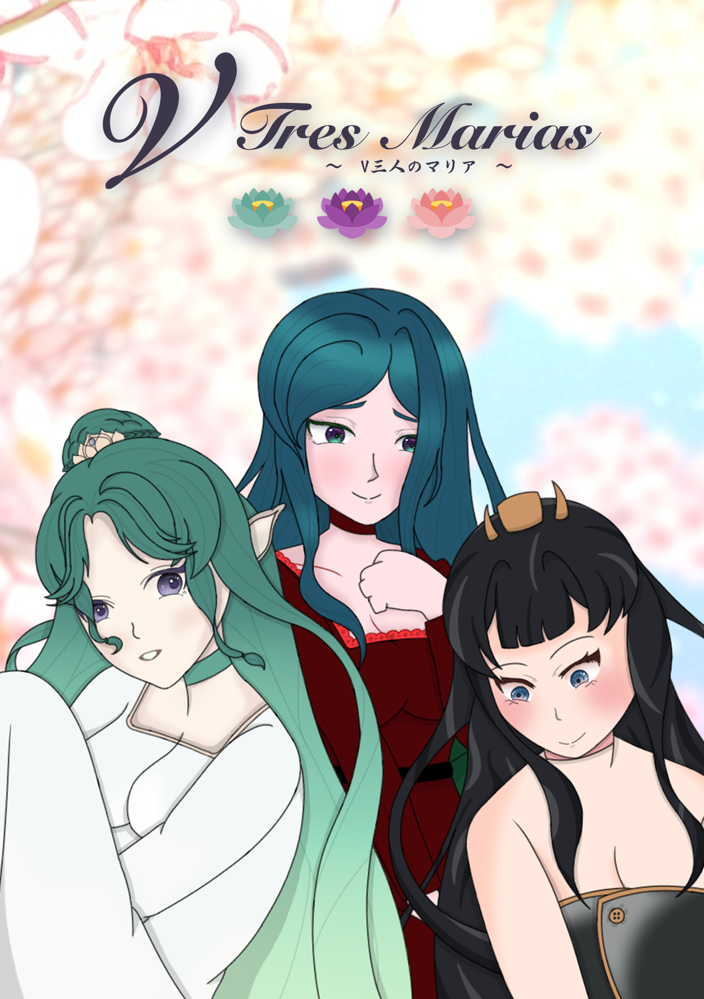 — one of the three A5 prints, featuring the first illust as Marias
and to make it EVEN MORE special, I included in my PR on Facebook before attending the event that anyone who gets the A5 print will have it autographed on the spot!! and the way I did the autograph is a lil basic -- I basically wrote the Japanese Kanji equivalent of my vtuber name on it!!
so far, I made a total of 6 prints -- two each -- with the final one sent to the organizers during the final auction event!!
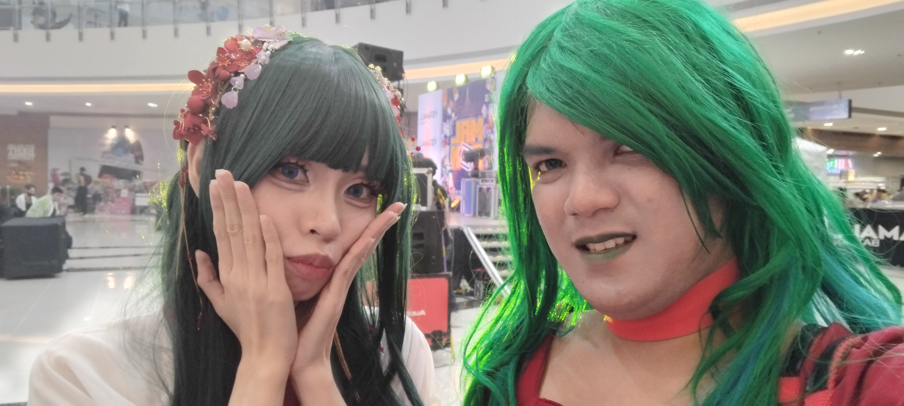 — Shira and I during Day 3 of the event
finally made a new fwen during the event!! Shira's one of the featured cosers during the event, to which I actually swung by her booth during my time there. (coincidentally, that happend with Dani cuz I hung out around her booth for who knows how long lmao)
we talked a lot of different things, including how I came up with my cosplay -- with one notable response saying that I somehow look like my own model, which is a lil flattering but honored regardless!!
(I also remembered her surprised look when I gave her the provisional contact card -- since the website where this blog lies were powered by GitHub, she recognized it almost immediately!! felt like it's my first time meeting someone who's not just a coser but also a developer, like me!!)
in addition to the cards, I also gave her one of my A5 prints (specifically the official illust as pictured below), which was signed on the spot!! in exchange, she gave me one of her photocards, also signed on the spot~
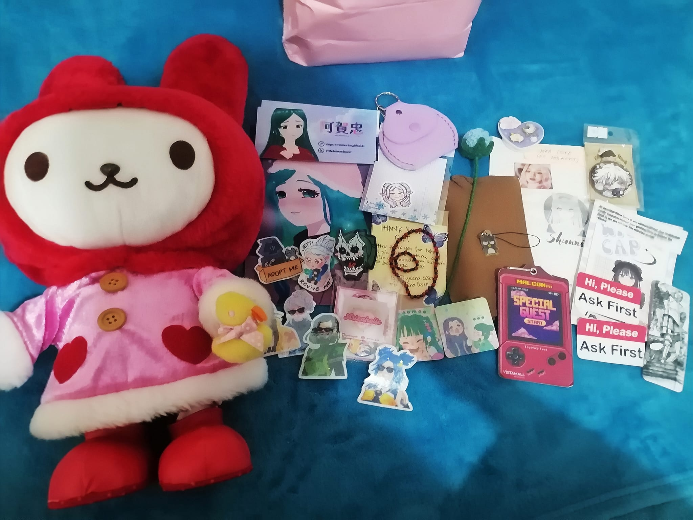 — all of Shira's merch hauls, post-Day 3
come Day 3 she and I got involved with more event segments, to which she was the judge.. afaik it was with the Anime Singing Contest; and also sang for the audience!! after the meetup post-contest tho we haven't interacted much since I had to wander around and get involved with more cosers -- including holding some mini-reunions ahead of Matsuri 2024. (more on that in the next section.)
but that all changed when the final auction segment came up -- since I'm already at the front-row seat during the seg, I figured I had to take some pictures of the items and its winning bidders. during those times, someone from her booth requested to the emcee that her tarpaulin be auctioned -- so judging from her reaction, I'd say she's quite more than surprised by the decision!!
everyone began hyping up in a bid to take the tarpaulin -- which was closed at thousands of Philippine Pesos (iirc). I actually called up to her when the bid closed tho😅 all in all, it was a pretty fun experience to get along with!!
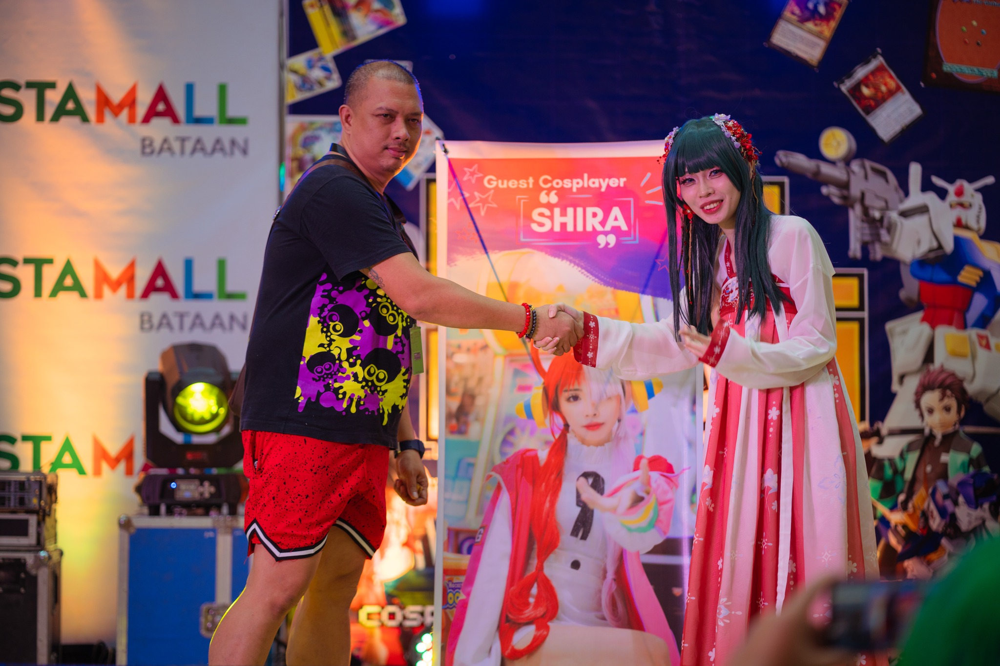 — cred. Berlyndg for MalCon 2024
 — from my camera perspective
— from my camera perspective
if you want to check her out, you can check her Facebook by clicking the below button!! and pweeease tell her I sent you umu ༼ つ ◕_◕ ༽つ
it's been a while since I got in touch with my fellow cosers since BACon 2024, which actually made me continue on with my cosplay ventures!! during those times, however, I wanted to give something that inspires them to continue doing what they love -- especially the two cosers that I've met that had a major significance to me as a coser and as a person.
with it, I've made a decision to provision another Collective that adheres to the Marias' Core Values: to be universal, and to accept who we are.
 — can you identify the other two cosers who represent these characters behind me??
— can you identify the other two cosers who represent these characters behind me??
in fact, one of the incumbent CosMarias also happend to participate in this event, as well as in the previous one!! does that ring a bell??!
that's right -- Eri, the incumbent Third CosMaria -- has returned to Vista Mall Bataan for Days 2 and 3 of the event!!
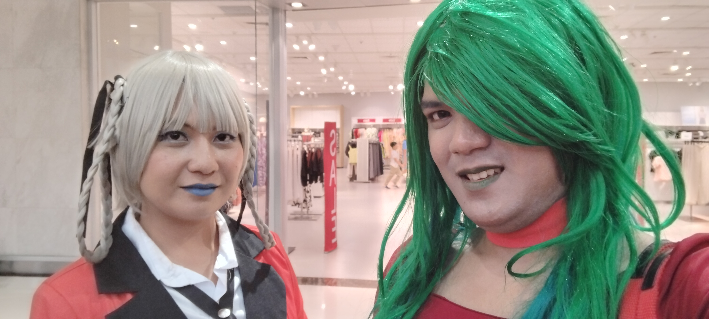 — Eri and I on Day 3!! she represented as Momobami Kirari from Kakegurui :3 (antagonist gang??!)
in actuality, she also happened to participate on Day 2 where I also made my appearance -- but for some reason we haven't caught up with each other qwq
for those who are curious, she represented as Kamui Kanna from Kobayashi-san Chi no Maid Dragon, as seen below:
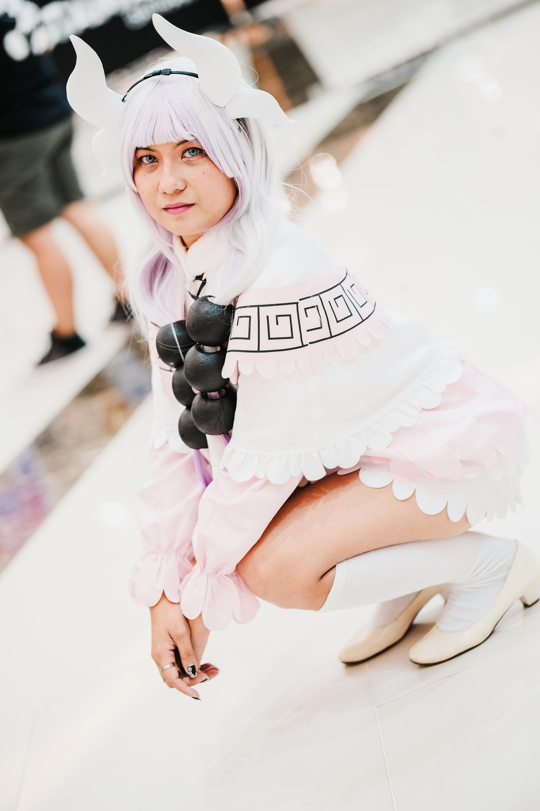 — cred. Emmanuel Calina
as a lil extra, I also reunited with another fellow coser Yue, who previously represented as Maomao from Apothecary Diaries. during our reunion, she became Shouyou Hinata from Haikyuu!! (might wanna watch that anime again..)
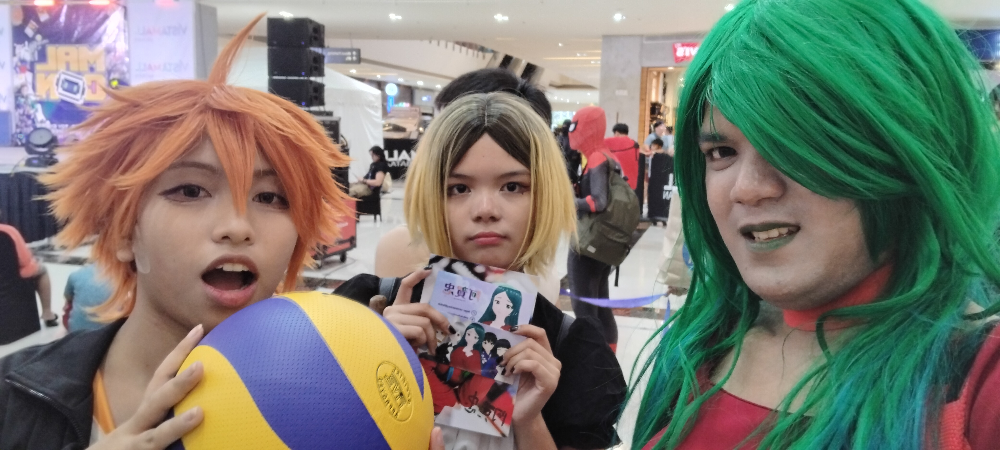 — Yue and I on Day 3!! (also gave em some cards aaaaa-)
Cosplay Marias -- abbrev. CosMarias -- is a Collective that acts just like VTresMarias, but mainly focuses on cosplays as main entry points!! just like the Marias, the Collective primarily consists of three cosers from different walks of life, focused on the same goals that adhere to the Marias' Core Values!!
coincidentally, the First Maria🍃 is also designated as the First CosMaria -- supporting her fellow Marias and CosMarias as they push through with their own destinies!!
at its current roster, the incumbent CosMarias consist of:
at current, I've already given Eri an exclusive card, signifying her designation into the new Collective. pictured below is the exact same graphic I gave to her:
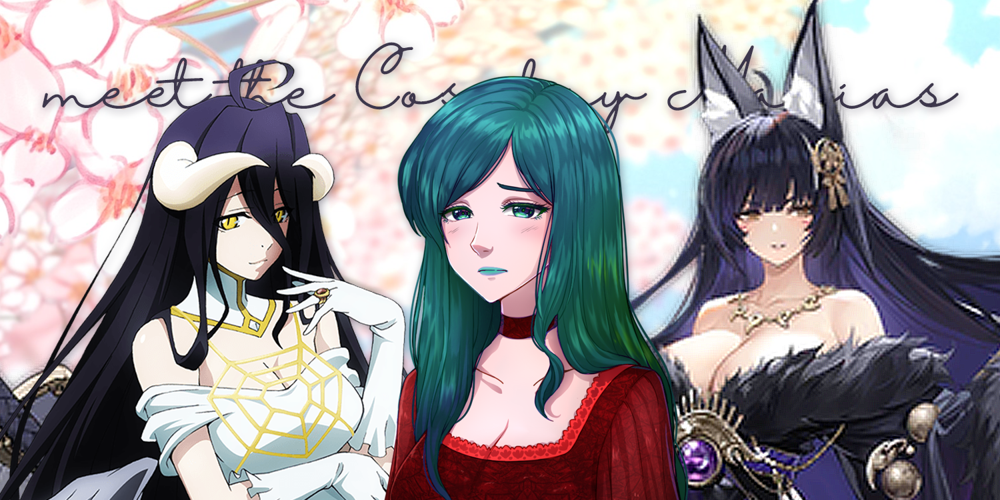 — "meet the Cosplay Marias" contact card
I'm currently planning on making more merch to give out to them in future conventions!!
(on an unrelated note, I actually gave Shira -- I call her Shi-Shi -- the same card to let her in on the scoop on what this new Collective is about.)
a special thanks to Emmanuel Calina for hitting me up again after the first cos visual back at BACon 2024!! I gotta admit, I'm a bit sassy in that visual, but Idk which pose would suit me best so I kinda improvised on my own lmao
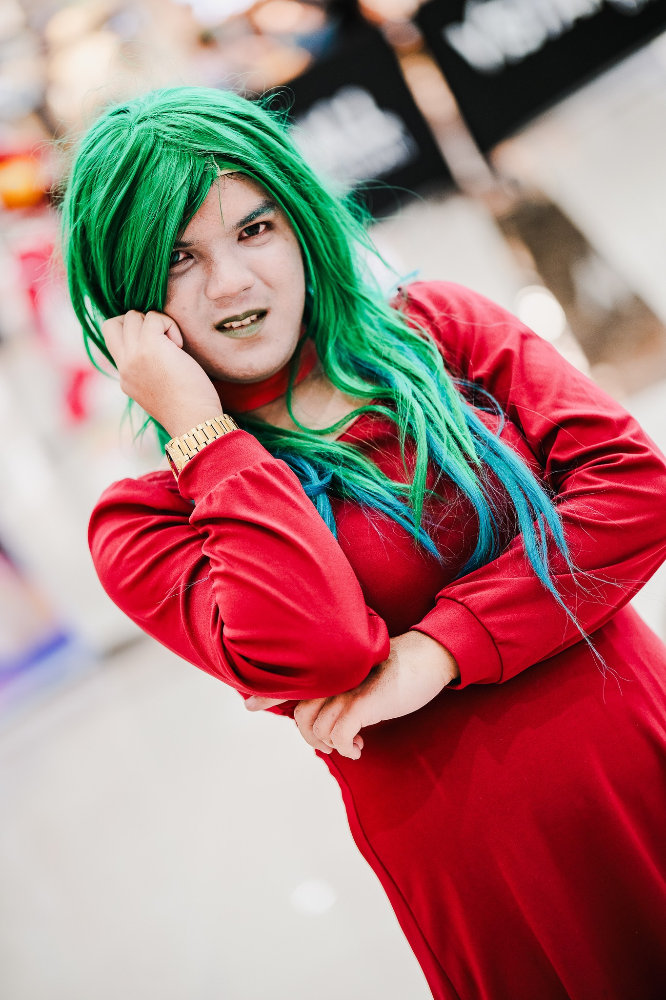 — cred. Emmanuel Calina
also, I didn't notice that I didn't wear my belt (I left it at home) during Day 2 where this visual was taken, which make it seem like I went back to the original look aaaaa-
it's been quite a read, but I wanna close another chapter in our cosplay venture by thanking our organizers and coordinators who made this leg possible!! I sent out the following letter as shown below:
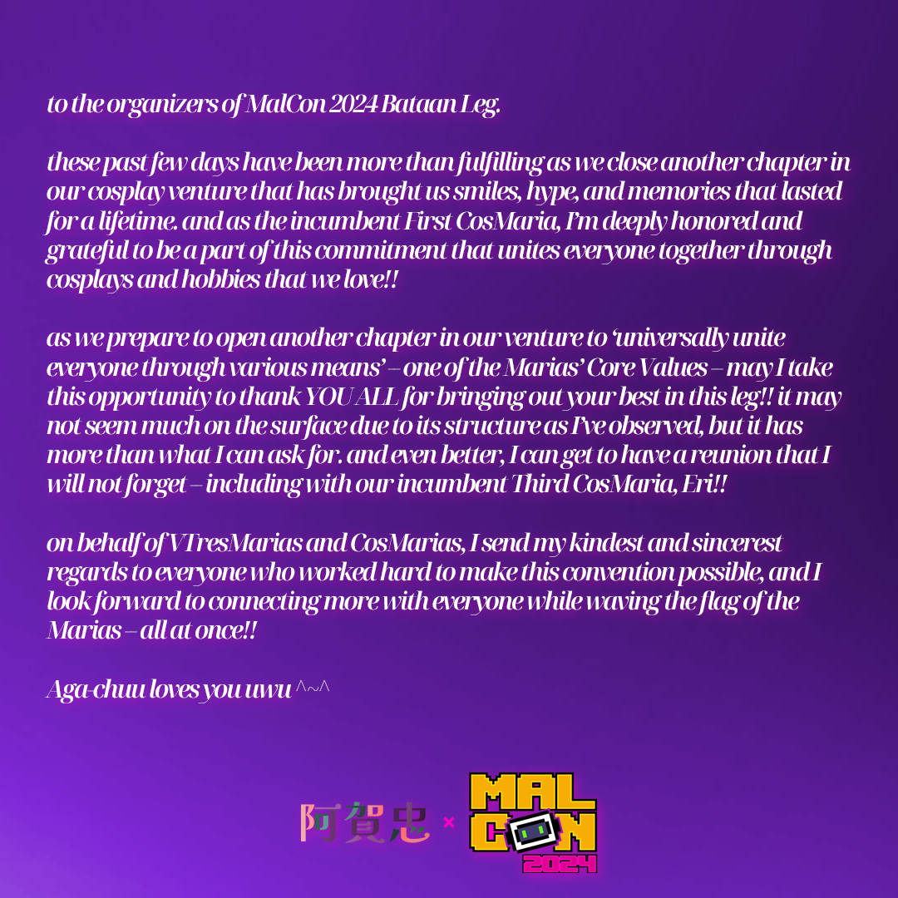
this will also be shown on the Marias' website as well, so keep an eye out for an update shortly.
you can check out Malolos Toy Convention for any updates via their Facebook, linked below:
are you curious about more content other than the one mentioned here?? look no further -- I've compiled all of em (including past cosplays I did) in a unified G Drive folder!! each cosplays are grouped into folders named in YYYYMMDD dateformat -- with the first attempt (and my debut as a cosplayer) being 20231230!!
you can check em out by clicking the button below:
absolutely!! you're all set to check out some of the photos I've taken and the cosplays I did -- granted that you'll be using them with intent of goodwill. everyone deserves to treat each other with positivity, and it's the First Maria🍃's job to ensure that it stays that way!!
anyway, be sure to credit me aswell if you're planning on using em!! you can use the following included in the below blockquote:
photo taken by thebelovedmoon, the First Maria🍃
check out her other works at https://bit.ly/AgaCosplay
if you're also planning on posting my cosplays, use the hashtag #AgaCosplay on your socials so that I can check it out in my spare time!! you can also send me the URL to your post assuming you posted em on my email at jelsa14018@gmail.com.
went through the article but still didn't understand anything? here's a quick summary to get you up to speed:
I somehow actually made it through this blog cuz it's been a while since I documented something in detail!! however, there's some topics that aren't included in this one, but I'll let the pictures do the talking!!
I initially wanted to postpone cosplaying for the whole of July to focus on Senri Mana, but this gave me more reasons to cosplay who I love!! come August, I'll have a special treat for our fellow Bataeños, so keep on the lookout on the blog for details~
until the next blogpost!! 💚🍃Aga-chuu loves you uwu💗🌸
published